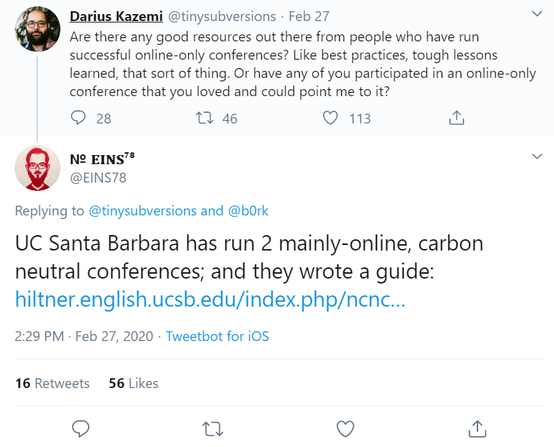
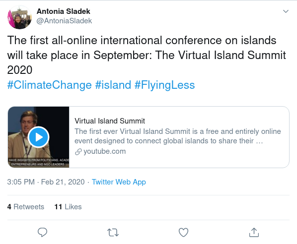
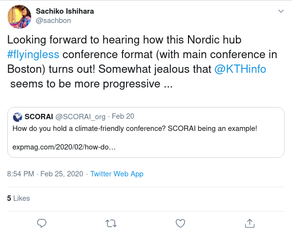

I recently started using TAGS to start archiving Twitter posts with key search phrases for later exploration and possible research. One of my search phrases was the hashtag #flyingless. #flyingless typically is appended to posts related to reducing the carbon footprint associated with flying, often flying to and from conferences, but also flying in general.
By just scraping the past few days worth of data, I found a few interesting takeaways.
Policies and Guides
Fundings organizations are taking the carbon footprint of their funds into account. This is from the UK, but maybe we will see similar things from NSF or NIH?

The University of Santa Barbara is also promoting smaller carbon footprints with their Nearly Carbon-Neutral Conference Model Guide

Conferences Are Paying Attention


People are enjoying #flyingless
People are sharing their #flyingless routes and the joy of slow travel. These mostly seem to be from Europe, where they can take advantage of modern rail travel.